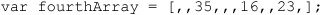
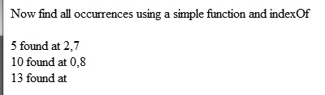
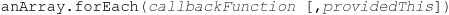
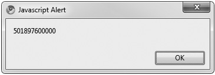
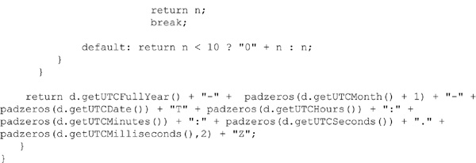
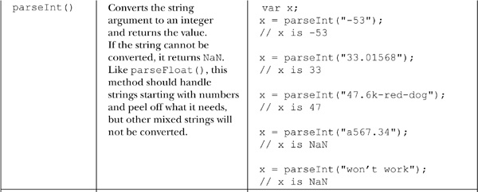
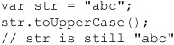
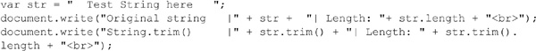

This chapter discusses in detail the capabilities of JavaScript’s built-in objects, particularly Array, Date, and Math. We will also look into the built-in objects related to the primitive types, such as Boolean, Number, and String, as well as the somewhat misnamed Global object. Notably missing from this chapter is the RegExp object, which requires a significant amount of explanation and is the subject of the next chapter. For each object covered in this chapter, the focus will be primarily on those properties in the ECMAScript 5 specification or on those commonly used and supported by the major browsers. We begin our overview of these built-in objects, proceeding in alphabetical order, starting from Array and ending in String.
Arrays were introduced in Chapter 3 as composite types that store ordered lists of data. Arrays may be declared using the Array() constructor or an array literal. We start first with the object constructor syntax. Here we declare a simple empty array:
If arguments are passed to the constructor, they are usually interpreted as specifying the elements of the array:
The exception is when the constructor is passed a single numeric value that creates an empty array but sets the array’s length property to the given value:
There is no particular advantage to using this last syntax as JavaScript arrays can grow and shrink at will, and it is rarely used in practice.
JavaScript 1.2+ allows you to create arrays using array literals. The following declarations are functionally equivalent to those of the previous example:
The first two declarations should not be surprising, but the third looks rather odd. The given literal has four commas, but the values they separate seem to be missing. The interpreter treats this example as specifying five undefined values and sets the array’s length to 5 to reflect this. Sometimes you will see a sparse array with such a syntax:

Fortunately, most programmers stay away from this last array creation method, as it is troublesome to count numerous commas.
The values used to initialize arrays need not be literals. The following example is perfectly legal and in fact very common:
Accessing the elements of an array is done using the array name with square brackets and a value. For example, we can define a three-element array like so:
and then just alert it to see what appears as a simple list:
Given that arrays in JavaScript are indexed beginning with zero, to access the first element we would specify myArray[0], then myArray[1], and so on. Here we show that indeed that is how the sample array is built:
However, you need to be careful when accessing an element of an array that is not set. For example,
results in the display of an undefined value, since this array element is obviously not set.
However, if we wanted to set this array element, doing so is quite straightforward.
The nice thing about JavaScript arrays, unlike those in many other programming languages, is that you don’t have to allocate more memory explicitly as the size of the array grows. For example, to add a fourth value to myArray, you would use
You do not have to set array values contiguously (one after the other), so
is valid as well. However, in this case you start to get a sparsely populated array, as shown by the dialog here that displays the current value of myArray after our changes:
Modifying the values of an array is just as easy: just reassign a preexisting indexed value. For example, to change the second value of the array, just assign it like this:
Of course, when setting array values, you must remember the distinction between reference and primitive types made in previous chapters. In particular, recall that when you manipulate a variable that has been set equal to a reference type, it modifies the original value as well. For example, consider the following:
You’ll notice, as shown here, that the value in firstArray was changed!
This aspect of reference types is very useful, particularly in the case of parameter passing to functions.
Array elements can be removed using the delete operator. This operator sets the array element it is invoked on to undefined but does not change the array’s length (more on this in a moment). For example,
results in
The effect is as if no element had ever been placed at that index. However, the length of the array is actually still three, as shown when you alert the entire array’s contents:
We can also verify that the array hasn’t shrunk by accessing its length property, the details of which are discussed next.
The length property retrieves the index of the next available (unfilled) position at the end of the array. Even if some lower indices are unused, length gives the index of the first available slot after the last element. Consider the following:
Even though myArray has only one element at index 1000, as we see by the alert dialog myArray.length, the next available slot is at the end of the array, 1001.
Because of this characteristic of the length property, we suggest using array elements in order. Assigning values in a noncontiguous manner leads to arrays that have “holes” between indices holding defined values—the so-called “sparsely populated array” mentioned earlier. Because JavaScript allocates memory only for those array elements that actually contain data, this is not a significant problem in terms of wasting memory. It merely means that you have to be careful that the undefined values in the “holes” are not accidentally used.
The length property is automatically updated as new elements are added to the array. For this reason, length is commonly used to iterate through all elements of an array. The following example illustrates array iteration and also a problem that can arise when using an array with “holes”:
As you can see from the result, something went very wrong. The expected result was 6, but we ended up with a value that is not a number (NaN). What happened? The array iteration went as expected, but myValues[1] was never assigned a value and so remained undefined. You may recall from Chapter 3 that to multiply undefined by a number results in NaN per JavaScript’s type conversion rules, thus the single undefined array element clobbered the entire computation.
Although the previous example is obviously contrived, using arrays with holes requires the programmer to exercise extra caution. We now present a “careful” version of the example, which gives the expected result:
The only difference with this script is that the multiplication has been placed inside of an if statement. The if statement checks each element for validity and ensures the proper behavior by skipping undefined values.
In addition to providing information, the length property can be set to perform certain functions. Any indices containing data that are greater than the value assigned to length are immediately reset to undefined. So, for example, to remove all elements from an array, you could set length to zero:
The assignment removes everything from the array by replacing the data at all indices with undefined, as if they had never been set. In this case, you really aren’t going to see much:
Setting length to a value greater than the index of the last valid element has no effect on the array contents, though it will increase the number of undefined slots in the array. Consider, for example, the result of the following script,
which is shown here:
You shouldn’t bother setting the length property directly, since the result of extending an array is usually a sparsely populated array. However, deletion with this method is acceptable. For example, removing the last element in the array with this capability can be done:
However, modern versions of JavaScript provide a better way to remove the last element with methods the Array object provides to simulate stacks and queues.
JavaScript 1.2+ and JScript 5.5+ provide methods for treating arrays like stacks and queues. For those readers unfamiliar with these abstract data types, a stack is used to store data in last-in, first-out order, often called LIFO. That is, the first object placed in the stack is the last one retrieved when the stack is read. A queue is an abstract data type used to store data in first-in, first-out order, also called FIFO. Data in a queue is retrieved in the order in which it was added.
A stack in the form of an array is manipulated using the push() and pop() methods. Calling push() appends the given arguments (in order) to the end of the array and increments the length property accordingly. Calling pop() removes the last element from the array, returns it, and decrements the length property by one. An example of using the properties is as follows, with the contents of the array and any values returned indicated in the comments:
Of course, you can use push() and pop() to add data to and remove data from the end of an array without thinking of it as an actual stack.
JavaScript also provides unshift() and shift() methods. These methods work as push() and pop() do, except that they add and remove data from the front of the array. Invoking unshift() inserts its arguments (in order) at the beginning of the array, shifts existing elements to higher indices, and increments the array’s length property accordingly. For example,
adds two more elements to the front of the array, as shown here:

Calling shift() removes the first element from the array, returns it, shifts the remaining elements down one index, and decrements length. You can think of shift() as shifting each element in the array down one index, causing the first element to be ejected and returned; so, given the previous example, if we called
we would end up with an array containing “fun,” 345, 78, and 2. As with pop(), invoking shift() on an array returns a value that can be used. For example, we could save the value shifted off the array into a variable:
You can use push() and shift() to simulate a queue. The following example illustrates the principle. We place new data at the end of the array and retrieve data by removing the element at index zero. The contents of the array and any return values are indicated in the comments:
Even if you never use arrays as stacks or queues, the methods discussed in this section can come in handy to manipulate the contents of arrays. Now let’s look at a few more useful array manipulations.
NOTE These methods require JavaScript 1.2 or JScript 5.5 or better. Archaic browsers like Internet Explorer 5 and earlier will not be able to natively use these features. However, using an Array prototype to add our own pop() and push() methods can fix this problem. See the section entitled “Extending Arrays with Prototypes,” later in this chapter.
JavaScript provides a wealth of methods for carrying out common operations on arrays. This section provides an overview of these Array methods with a brief discussion of some of their quirks.
The concat() method returns the array resulting from appending its arguments to the array on which it was invoked. Given the script:
the expected larger array is shown here:
Be careful, though: concat() does not modify the array in place. Notice the output of this script,
which is shown here:
To save the change, you will need to save the returned value; for example:
If any argument to concat() is itself an array, it is flattened into array elements:
This flattening is not recursive, so an array argument that contains an array element has only its outer array flattened. An example illustrates this behavior more clearly:
You may notice that arrays are recursively flattened if you output the entire array with an alert. However, access the length property or the individual elements and it will become apparent that you have nested arrays as shown in the previous example.
The join() method of JavaScript 1.1+ and JScript 2.0+ converts the array to a string and allows the programmer to specify how the elements are separated in the resulting string. Typically, when you print an array, the output is a comma-separated list of the array elements. You can use join() to format the list separators as you’d like:
One important thing to note is that the join() method will not destroy the array as a side effect of returning the joined string of its elements. You could obviously do this, if you like, by overriding the type of the variable. For example:
The join() method is the inverse of the split() method of the String object.
JavaScript 1.1+ and JScript 2.0+ also allow you to reverse the elements of the array in place, meaning you don’t have to save the result as some of the other array methods we have seen.
The reverse() method, as one might expect, reverses the elements of the array it is invoked on:
The slice() method of Array (supported since JavaScript 1.2+ and JScript 3.0) returns a “slice” (subarray) of the array on which it is invoked. As it does not operate in place, the original array is unharmed. The syntax of slice() is
where the method returns an array containing the elements from index start up to but not including index end. If only one argument is given, the method returns the array composed of all elements from that index to the end of the array. Note that start and end are allowed to take on negative values. When negative, these values are interpreted as an offset from the end of the array. For example, calling slice(-2) returns an array containing the last two elements of the array. These examples show slice() in action:
The splice() method, available in JavaScript 1.2+ and JScript 5.5+, can be used to add, replace, or remove elements of an array in place. Any elements that are removed are returned. It takes a variable number of arguments, the first of which is mandatory. The syntax could be summarized as
The first argument start is the index at which to perform the operation. The second argument is deleteCount, the number of elements to delete beginning with index start. Any further arguments represented by replacevalues (that are comma separated, if more than one) are inserted in place of the deleted elements:
The toString() method returns a string containing the comma-separated values of the array. This method is invoked automatically when you print an array. It is equivalent to invoking join() without any arguments. It is also possible to return a localized string using toLocaleString(), where the separator may be different given the locale of the browser running the script. However, in most cases, this method will return the same value as toString().
The creation of a string that preserves square brackets is available through the toSource() method as of JavaScript 1.3:
This allows you to create a string representation of an array that can be passed to the eval() function to be used as an array later on. The eval() function is discussed in the section entitled “Global” later in this chapter.
One of the most useful Array methods is sort(). Supported since JavaScript 1.1 and JScript 2.0, the sort() works much like the qsort() function in the standard C library. By default, it sorts the array elements in place according to lexicographic order. It does this by first converting the array elements to a string and then sorting them lexicographically. This can cause an unexpected result in some cases. Consider the following:
As you see above when running this script, you will find that, according to this JavaScript sort, 3 is larger than 14!
The reason for this result is that, from a string ordering perspective, 14 is smaller than 3. Fortunately, the sort function is very flexible and we can fix this. If you want to sort on a different order, you can pass sort() a comparison function that determines the order of your choosing. This function should accept two arguments and return a negative value if the first argument should come before the second in the ordering. (Think: the first is “less” than the second.) If the two elements are equal in the ordering, it should return zero. If the first argument should come after the second, the function should return a positive value. (Think: the first is “greater” than the second.) For example, if we wished to perform a numerical sort, we might write a function like the following.
Then we could use the function in the previous example:
Here we get the result that we expect:
If you want to be more succinct, you can use an anonymous function, as described in Chapter 5. Consider this example, which sorts odd numbers before even numbers:

Note that we could make this example more robust by including code that ensures that the even and odd values are each sorted in ascending order. The point here is simply to remind readers that we can use functions inline.
Although not explicitly included in the language, most JavaScript implementations support a form of multidimensional arrays. A multidimensional array is an array that has arrays as its elements. For example,
defines a two-dimensional array. Array elements in multidimensional arrays are accessed as you might expect, by using a set of square brackets to indicate the index of the desired element in each dimension. In the previous example, the number 4 is the third element of the second array and so is addressed as tableOfValues[1][2]. Similarly, 7 is found at tableOfValues[0][2], 6 at tableOfValues[2][0], and 9 at tableOfValues[2][2]. The following simple example shows this access in action:
In JavaScript, all nonprimitive data is derived from the Object object, which was discussed in Chapter 6. We should recall that, because of this, we could add new methods and properties to any object we like using object prototypes. For example, we could add a special display() method to arrays that alerts the user as to the array contents:
We could then print out the value of arrays using our new display() method, as illustrated here:
By using prototypes, we can create a “monkey patch” that will fix the lack of pop() and push() methods in pre-Internet Explorer 5.5 browsers. For example, to add the pop() method in older browsers or override safely the built-in pop() in newer browsers, we would use the following code to add the missing functionality:
Our own implementation of push() is only slightly more complicated and is shown here:
We can see that mastery of the ideas from the previous chapter really can come in handy! While our own functions could be used to resolve issues with older and nonstandard browsers, don’t think the use of prototypes will solve all your problems. In fact, you may find that you inadvertently break things if you start overriding and extending things in JavaScript. This may be required with the introduction of ECMAScript 5 extensions, though, until deployed browsers catch up.
ECMAScript 5 makes official a number of extensions to Array that have been found in many browsers for years. In fact, you will see that most of these extensions have been available since JavaScript 1.6 (Firefox 1.5). Many libraries, such as jQuery or Prototype, emulate some or all of these features; and it is quite easy to patch where needed, as Internet Explorer browsers before version 9 do not support these methods.
A simple array-related change introduced by ECMAScript 5 is the Array.isArray (val) method to see if a passed val is of the array type or not:
Because a browser may not be ECMAScript 5 compliant, you may patch the lack of Array.isArray() using a small code fragment like so:
ONLINE http://www.javascriptref.com/3ed/ch7/isarray.html
The indexOf() method allows you to easily find the occurrence of an item in an array, as shown in this example:
If the item is not found, the method returns –1. By default, searching begins at the start of the array (index of 0); however, it is possible to pass a second parameter of the index to start a search from. The complete indexOf() syntax is shown here:
As an example, here we search for another 5 in the test array:
This would return a different index value showing the second 5 in the array:
If we want to search continuously, it is easy enough to construct a loop to do so until we hit a –1 return. The only trick to the code is to make sure we add one to a found index so we don’t redo the search starting at a target value:

ONLINE http://www.javascriptref.com/3ed/ch7/arrayindexof.html
The lastIndexOf() method is similar to the indexOf() method except it begins the search for an item from the last element of the array working toward the start at index 0. In the case where there are single elements in an array, the methods will be identical; but in the case of duplicates, they will differ:
Like indexOf(), you may also pass a second parameter to start a search array.lastIndexOf (target [,start ]), as demonstrated here:
Further, another looping style structure can be employed, this time with the start index decremented to find all occurrences of a target within the searched array:
ONLINE http://www.javascriptref.com/3ed/ch7/arraylastindexof.html
The every() method allows you to apply a passed function to every element in an array. If the function returns true for every element it is applied to in the array, every() will emit a true value; otherwise, it will return false.
As a demonstration, we write a simple function to determine if a value is even or not:
Then we might apply this function to the elements in an array, like so:
We may also inline the function, of course, if it is simple enough:
The callback function is invoked with up to three parameters: the current value being looked at, its index in the array, and the array itself. Given this extra available data, this function:
could be used to see if an array was in an ascending sort order:
Of course if you think about it, this is not a very efficient approach because it continually partially retraverses the array as it goes. It might be better simply to compare the current element to the previous element:
This would seem to work:
However, it would fail in the case of a sparse array, as the previous element comparison would not work:
If we could retain the state of the previous index looked at, that may be useful to fix the function. It turns out that you may pass an optional parameter to every() to act as the this object for the executed function. The syntax would look like this:
When not specified, this in the callback function will most likely be the Window object, but we are free to redefine it to suit our own purposes. In our cases, we have it hold its previously inspected index:
which should work appropriately:
Because every() is a newer feature of ECMAScript 5, though it is supported in many browsers such as Firefox 1.5+, it is possible to add it to Array if it is not found natively, as shown here:

ONLINE http://www.javascriptref.com/3ed/ch7/arrayevery.html
The some() method is applied to an array and will return true if some elements(s) of the array make a provided callback function evaluate to true. If no elements cause the callback function to evaluate true, then the method returns false. The following simple example shows whether some elements in an array are even or not. As shown in the example, you can use the callback function inline as well:
Like the every() method, the supplied callback function has a function signature like this:
It allows you to easily inspect the current value and index, and the array itself. Also, you may define your own this object for use within the callback function; otherwise, the typical value of the this object will be used, and this most likely will be Window, in the case of browser- based JavaScript. The general syntax looks like this:
Since it is defined by ECMAScript 5, some browsers—notably IE8 and before—will not support this method; however, it is easily patched using code, like so:
ONLINE http://www.javascriptref.com/3ed/ch7/arraysome.html
ECMAScript 5’s forEach() method for Array provides the invocation of a passed function on each element of an array individually using the following syntax:

The callbackFunction has the function signature of
where val is the current value being looked at, index is the position of that value in the array, and array is a reference to the whole array. The forEach() method executes on all defined elements, but nothing is returned that controls execution, as other ECMAScript 5 Array methods such as every() or some() do. Furthermore, the elements of the array are not mutated by any manipulation unless you save them back into the array. This simple example shows a doubling of all values in the array:
NOTE The function of forEach() sometimes is more naturally handled by the map() method discussed next.
As with other ECMAScript 5 Array additions, the forEach() method may not be available but is easy enough to simulate, as demonstrated by this simple patch:
ONLINE http://www.javascriptref.com/3ed/ch7/arrayforeach.html
ECMAScript 5’s map() method for Array provides the invocation of a passed function on each element of an array individually using the following syntax:
The callbackFunction has the function signature of
where val is the current value being looked at, index is the position of that value in the array, and array is a reference to the whole array. The map() method executes on all defined elements and returns a new element for a new array element returned from the callback. This simple example shows a doubling of all values in the array, done more elegantly than the forEach() approach shown in the previous section:
As with other ECMAScript 5 Array additions, the map() method may not be available but is easy enough to simulate, as demonstrated by this simple patch:
ONLINE http://www.javascriptref.com/3ed/ch7/arraymap.html
ECMAScript 5’s filter() method for Array provides the invocation of a passed function on each element of an array individually using the following syntax:
The callbackFunction has the function signature of
where val is the current value being looked at, index is the position of that value in the array, and array is a reference to the whole array. If the callbackFunction() returns true for a passed value, the element in question will be returned and placed in the newArray. If an element does not cause the callback to return true, it fails the filter and thus is not included in the newly returned array. As a simple example, we filter an array here for its even numbers:
As with other ECMAScript 5 Array additions, the filter() method may not be available but is easy enough to simulate as demonstrated by this simple patch:
ONLINE http://www.javascriptref.com/3ed/ch7/arrayfilter.html
ECMAScript 5’s reduce() method for Array provides the invocation of a passed function on each element of an array individually, starting from the 0 index and proceeding to the end of the array using the following syntax:
The callbackFunction has a different function signature of
where previousValue is the previous value accumulated (it may just be the current value of the array), currentValue is the current one being looked at, index is the position of that value in the array, and array is a reference to the whole array. A simple example illustrates the use. In this situation, we sum all items in the array but print out the various values as we go:
We see here how the result is added up as the array is traversed, as well as the final result:
Now, some confusion may arise when thinking about simple cases. Here we illustrate the call of smaller arrays, and you see that the reduction of a single element is a base case and two elements are a single application:
Next, given the function signature as well as the optional value shown in the initial syntax, we prime the reduction with an initial value:
Like other ECMAScript 5 Array changes shown previously in this section, we can be simulated for nonsupporting browsers:
ONLINE http://www.javascriptref.com/3ed/ch7/arrayreduce.html
ECMAScript 5’s reduceRight() method for Array provides the invocation of a passed function on each element of an array individually, starting from the end of the array and working toward the start using the following syntax:
The callbackFunction has a different function signature of
where previousValue is the previous value accumulated (it may just be the current value of the array), currentValue is the current one being looked at, index is the position of that value in the array, and array is a reference to the whole array. A simple example illustrates the use. In this situation, again we sum all items in the array but print out the various values as we go:
You’ll notice in the case of summation that there is no difference between a standard reduction or right reduction. However, this will not always be the case. For example, here we apply a simple difference reduction, and the results are quite different from reduce() and reduceRight():
Like all the other ECMAScript 5 Array extensions, reduceRight() can be simulated in nonsupporting browsers.
ONLINE http://www.javascriptref.com/3ed/ch7/arrayreduceright.html
Boolean is the built-in object corresponding to the primitive Boolean data type. This object is extremely simple. It has no interesting properties of its own. It inherits all of its properties and methods from the generic Object, so it has toSource(), toString(), and valueOf(). Out of these, maybe the only method of practical use is the toString() method, which returns the string “true” if the value is true or “false” otherwise. The constructor takes an optional Boolean value indicating its initial value:
However, if you don’t set a value with the constructor, it will be false by default.
Because of some subtleties in JavaScript’s type conversion rules, it is almost always preferable to use primitive Boolean values rather than Boolean objects.
The Date object provides a sophisticated set of methods for manipulating dates and times. Working with some of the more advanced methods that Date provides can be a bit confusing, unless you understand the relationship between Greenwich Mean Time (GMT), Coordinated Universal Time (UTC), and local time zones. Fortunately, for the vast majority of applications, you can assume that GMT is the same as UTC and that your computer’s clock is faithfully ticking away in GMT and is aware of your particular time zone.
There are several facts to be aware of when working with JavaScript date values:
• JavaScript stores dates internally as the number of milliseconds since the “epoch,” January 1, 1970 (GMT). This is an artifact of the way UNIX systems store their time and can cause problems if you wish to work with dates prior to the epoch in older browsers.
• When reading the current date and time, your script is at the mercy of the client machine’s clock. If the client’s date or time is incorrect, your script will reflect this fact.
• Days of the week and months of the year are enumerated beginning with zero. So day 0 is Sunday, day 6 is Saturday, month 0 is January, and month 11 is December. Days of the month, however, are numbered beginning with one.
The syntax of the Date() constructor is significantly more powerful than other constructors we have seen. The constructor takes optional arguments that permit the creation of Date objects representing points in the past or future. Table 7-1 describes constructor arguments and their results.
Table 7-1 Arguments to the Date() Constructor
Table 7-1 warrants some commentary. The string version of the constructor argument can be any date string that can be parsed by the Date.parse() method. In the syntax of the last two formats, the arguments beyond the year, month, and day are optional. If they are omitted, they are set to zero. The final syntax that includes milliseconds is available only in JavaScript 1.3+.
NOTE Because of the ambiguity that arises from representing the year with two digits, you should always use four digits when specifying the year. This can be done using the getFullYear() method discussed later in this section.
It is important to note that Date objects you create are static. They do not contain a ticking clock. If you need to use a timer of some sort, the setInterval() and setTimeout() methods of the Window object are much more appropriate. These other methods are discussed in later application-oriented chapters.
Date objects are created to be picked apart and manipulated and to assist in formatting dates according to your specific application. You can even calculate the difference between two dates directly:
The result indicates the approximate number of milliseconds elapsed between January 6, 1995, and December 2, 2010:

Converting this last example to a more usable value isn’t difficult and is discussed next.
To hide the fact that Date objects store values as millisecond offsets from the epoch, dates are manipulated through the methods they provide. That is, Date values are set and retrieved by invoking a method rather than setting or reading a property directly. These methods handle the conversion of millisecond offsets to human-friendly formats and back again for you automatically. The following example illustrates a few of the common Date methods:
This example gets the current date and adds one year to it. The result is shown here:
JavaScript provides a comprehensive set of get and set methods to read and write each field of a date, including getDate(), setDate(), getMonth(), setMonth(), getHours(), setHours(), getMinutes(), setMinutes(), getTime(), setTime, and so on. In addition, UTC versions of all these methods are also included: getUTCMonth(), getUTCHours(), setUTCMonth(), setUTCHours(), and so forth. One set of methods requires a special comment: getDay() and setDay(). These are used to manipulate the day of the week that is stored as an integer from 0 (Sunday) to 6 (Saturday). An example that illustrates many of the common Date methods in practice is shown here, and the results are shown in Figure 7-1:
Figure 7-1 Common Date Functions in Action
ONLINE http://javascriptref.com/3ed/ch7/datemethods.html
There are a variety of ways to convert Date objects to strings. If you need to create a date string of a custom format, the best way to do so is to read the individual components from the object and piece the string together manually. If you want to create a string in a standard format, Date provides three methods for doing so. These methods are toString(), toUTCString(), and toGMTString(), and their use is illustrated in the next example. Note that toUTCString() and toGMTString() format the string according to Internet (GMT) standards, whereas toString() creates the string according to “local” time. The result is shown in Figure 7-2.
Figure 7-2 Printing Date Strings
ONLINE http://javascriptref.com/3ed/ch7/datestrings.html
Because you can pass the Date() constructor a string, it seems reasonable to assume that JavaScript provides a mechanism for converting strings into Date objects. It does so through the class method Date.parse(), which returns an integer indicating the number of milliseconds between the epoch and its argument. Notice that this method is a property of the Date constructor, not of individual Date instances.
The parse() method is very flexible with regard to the dates it can convert to milliseconds. The string passed as its argument can, naturally, be a valid string of the form indicated in Table 7-1. Also recognized are standard time zones, time zone offsets from GMT and UTC, and the month/day/year triples formatted with - or / separators, as well as month and day abbreviations such as “Dec” and “Tues.” For example,
creates myDate with the correct value shown here:
If you are not sure whether the particular string you wish to convert will be recognized by Date.parse(), you need to check the value it returns. If it cannot convert the given string to a date, the method returns NaN. For example, the invocation in this example,
results in NaN because myDay does not contain enough information to resolve the date.
NOTE There have been numerous attempts to improve the date creation handling methods of JavaScript so that you can instantiate them with values such as “tomorrow”, “3 days from now”, or other human-friendly strings. However, there is no standardization of such attempts, and we leave readers to search for a library rather than recommend one, since none clearly dominates yet.
The nuances of the Date object should not be underestimated. Recall that ECMA-262 is the standard governing core JavaScript language features. While most aspects of browser implementations adhere to the specification rigorously, deviation in Date object behavior is commonplace in some archaic browsers. For example, Date support in very old browsers, particularly Netscape 2, is atrocious. Internet Explorer 3 did not allow dates prior to the epoch. However, modern browsers can handle dates hundreds and thousands of years before or after the epoch, which should be enough to handle most tasks. Of course, using extreme dates such as prior to 1 A.D. or far in the future should be done with caution, if not for concerns of browser support than simple reasonability.
There are not a tremendous number of changes to Date from ECMAScript 5. The first is Date.now(), which is just a cleaner way to get the current time:
This, of course, can be easily simulated using a standard Date() constructor and employing type conversion or using a more readable method:
ONLINE http://www.javascriptref.com/3ed/ch7/datenow.html
ECMAScript 5 also introduces the method toISOString():
This can be simulated using code like this as well:

ONLINE http://www.javascriptref.com/3ed/ch7/datetoisostring.html
Last but not least, ECMAScript 5 provides an easy way to transform JavaScript Date objects into a JSON format using the toJSON() method:
Once the date is serialized into a JSON format, it can be manipulated or transmitted and then easily converted back into a Date object using a typical string parse, like so:
The Global object acts somewhat as a catchall for top-level properties and methods that are not part of any other object. You cannot create an instance of the Global object; it is defined in the ECMA-262 standard to be a place for globally accessible, otherwise homeless properties to reside. It provides several essential properties that can be used anywhere in JavaScript. Table 7-2 summarizes its most useful methods. These methods are called directly and are not prefixed with global. In fact, doing so will result in an error. It is because the methods appear unrelated to any particular object that some documentation on JavaScript refers to these as “global” or built-in functions.
Table 7-2 Globally Available Methods

NOTE The Global object also defines the constants NaN and Infinity, which were used in the examples in Table 7-2. However, similar constants are also provided by the Number object, discussed later in the chapter.
The Global methods are very useful and will be used in examples throughout the book. Aspiring JavaScript programmers should try to become very familiar with them. In particular, the eval() method is quite powerful, and it is interesting to see how very succinct scripts can be written with it. However, with this power comes a price, and many scripts using eval() produce very tricky runtime problems. Some feel they cause security issues, so proceed with caution. Do note that, under ECMAScript 5 strict mode, some limitations may be placed upon eval().
NOTE The authors find the fixation on eval() somewhat amusing, as there are numerous ways to cause security mischief with JavaScript without it. Further, for security consistency, if you are against eval() you should also be against the commonly used innerHTML property, as well as dynamic script element insertion. There are similar quirks and problems with these features.
Another interesting consideration for Global methods is the escaping of strings provided by escape() and unescape(). Primarily, we see this done on the Web in order to create URL safe strings. You probably have seen this when working with forms. While these methods would be extremely useful, the ECMAScript specification suggests that escape() and unescape() are deprecated in favor of the more aptly named
While these methods are part of the specification, programmers still often avoid them, given that some browsers do not support them. Furthermore, for better or worse, escape() and unescape() are commonly used by current JavaScript programmers, so their usage doesn’t seem to be dying down in favor of the specification functions anytime soon. Far more amusing is that, in fact, the encoding process used by these methods does not necessarily act as a browser would. This can be quite a concern when using it with Ajax.
Here, we present a simple example of “patching” URL encoding to make it work exactly as browsers do:
The Math object holds a set of constants and methods that enable more complex mathematical operations than the basic arithmetic operators discussed in Chapter 4. You cannot instantiate a Math object as you would an Array or Date. The Math object is static (automatically created by the interpreter), so its properties are accessed directly. For example, to compute the square root of 10, the sqrt() method is accessed through the Math object directly:
Table 7-3 gives a complete list of constants provided by Math. A complete list of mathematical methods is given in Table 7-4.
Table 7-3 Constants Provided by the Math Object

Table 7-4 Methods Provided by the Math Object
There are several aspects of the Math object that need to be kept in mind. The trigonometric methods work in radians, so you need to multiply any degree measurements by π / 180 before using them. Also, because of the imprecise characteristic of floating-point operations, you might notice minor deviations from the results you expect. For example, though the sine of π is 0, the following code:
gives the result
This value is very close to zero, but is not and might trip us up in sensitive calculations.
It might seem that Math does not provide the capability to compute logarithms in bases other than e. Indeed it does not, directly. However, the following mathematical identity can be used to compute logarithms in an arbitrary base:
For example, you can compute the log base 2 of 64 as
Because the Math.random() method returns values between zero and one, you must normalize its return value to fit the range of numbers required of your application. An easy way to get random integers in the range m to n (inclusive) is as follows:
So, to simulate a die roll you would use
Generating random numbers in this manner is sufficient for most applications, but if “high quality” randomness is required, a more advanced technique should be used.
Number is the built-in object corresponding to the primitive number data type. As discussed in Chapter 3, all numbers are represented in IEEE 754-1985 double-precision floating-point format. This representation is 64 bits long, permitting floating-point magnitudes as large as ±1.7976×10308 and as small as ±2.2250×10-308. The Number() constructor takes an optional argument specifying its initial value:
Table 7-5 lists the special numeric values that are provided as properties of the Number object.
Table 7-5 Properties of the Number Object
The only useful method of this object is toString(), which returns the value of the number in a string. Of course it is rarely needed, given that generally a number type converts to a string when we need to use it as such.
String is the built-in object corresponding to the primitive string data type. It contains a very large number of methods for string manipulation and examination, substring extraction, and even conversion of strings to marked-up HTML, though unfortunately not standards-oriented XHTML. Here we overview them with special focus on those that are most commonly used.
The String() constructor takes an optional argument that specifies its initial value:
Because you can invoke String methods on primitive strings, programmers rarely create String objects in practice.
The only property of String is length, which indicates the number of characters in the string.
The length property is automatically updated when the string changes and cannot be set by the programmer. In fact, there is no way to manipulate a string directly. That is, String methods do not operate on their data “in place.” Any method that would change the value of the string returns a string containing the result. If you want to change the value of the string, you must set the string equal to the result of the operation. For example, converting a string to uppercase with the toUpperCase() method would require the following syntax:
Invoking str.toUpperCase() without setting str equal to its result does not change the value of str. The following does not modify str:

Other simple string manipulation methods such as toLowerCase() work in the same way; forgetting this fact is a common mistake made by new JavaScript programmers.
Individual characters can be examined with the charAt() method. It accepts an integer indicating the position of the character to return. Because JavaScript makes no distinction between individual characters and strings, it returns a string containing the desired character. Remember that, like arrays, characters in JavaScript strings are enumerated beginning with zero, so

retrieves “a.” You can also retrieve the numeric value associated with a particular character using charCodeAt(). Because the value of “a” in Unicode is 97, this statement
returns 97.
Conversion from a character code is easy enough using the fromCharCode() method. Unlike the other methods, this one is generally used with the generic object String itself rather than a string instance. For example,
would set the value of the variable aChar to ‘R.’ Multiple codes can be passed in by separating them with commas. For example,
would set aString to “DOG.”
NOTE You will probably receive a ? value or a strange character for any unknown values passed to the fromCharCode() method.
The indexOf() method takes a string argument and returns the index of the first occurrence of the argument in the string. For example,
returns 4. If the argument is not found, –1 is returned. This method also accepts an optional second argument that specifies the index at which to start the search. When specified, the method returns the index of the first occurrence of the argument at or after the start index. For example,
returns 3. A related method is lastIndexOf(), which returns the index of the last occurrence of the string given as an argument. It also accepts an optional second argument that indicates the index at which to end the search. For example,
returns 1. This method also returns –1 if the string is not found.
There are numerous ways to extract substrings in JavaScript. The best way to do so is with substring(). The first argument to substring() specifies the index at which the desired substring begins. The optional second argument indicates the index at which the desired substring ends. The method returns a string containing the substring beginning at the given index up to but not including the character at the index specified by the second argument. For example,
returns “aScript”, and
returns “aScr”. The slice() method is a slightly more powerful version of substring(). It accepts the same arguments as substring(), but the indices are allowed to be negative. A negative index is treated as an offset from the end of the string.
The match() and search() methods use regular expressions to perform more complicated examinations of strings. The use of regular expressions is discussed in Chapter 8, and these methods are demonstrated there.
The most basic operation one can perform with strings is concatenation. Concatenating strings with the + operator should be familiar by now. The String object also provides a concat() method to achieve the same result. It accepts any number of arguments and returns the string obtained by concatenating the arguments to the string on which it was invoked. For example,
assigns “JavaScript is a flexible language.” to the variable s, just as the following would:
NOTE Some JavaScript aficionados look closely at the performance of string methods versus the standard + or even using other methods to perform similar tasks. In some extreme use, cases such as micro optimizations may be quite warranted, but assuming that the implementation speed of one method over another in JavaScript is consistent across browsers has not been true in our experience. In short, knowing some arcane aspects of a browser’s JavaScript implementation can be useful but should be applied with caution. Chapter 18 has a bit more information on optimizations that are useful if readers are interested.
A method that comes in very useful when parsing preformatted strings is split(). The split() method breaks the string up into separate strings according to a delimiter passed as its first argument. The result is returned in an array. For example,
assigns wordArray an array with three elements: “A,” “simple,” and “example.” Passing the empty string as the delimiter breaks the string up into an array of strings containing individual characters. The method also accepts a second argument that specifies the maximum number of elements into which the string can be broken.
As we see, the String split() method and the Array join() method can work hand in hand, sometimes with some great elegance. As a demonstration, notice here this function addClass, which adds a new class name to a DOM elements list of class attribute values. The split() method is used to pull apart the classes; then a new one is added, and they are joined back together in a string and put back in the DOM:
We’ll see some more applied uses of the methods presented in this chapter later in the book as we create more applied scripts.
Because JavaScript is commonly used to manipulate Web pages, the String object provides a large set of methods that mark strings up as HTML. Each of these methods returns the string surrounded by a pair of HTML tags. Note that the HTML returned is not standards-oriented HTML 4 or XHTML but more like the old physical-style HTML 3.2. For example, the bold() method places <B> and </B> tags around the string it is invoked on. The following
places this string in str:

You may wonder how to apply more than one HTML-related method to a string. This is easily accomplished by chaining method invocations. While chained method invocations can appear intimidating, they come in handy when creating HTML markup from strings. For example,
assigns the following string to str:
This displays a blinking, struck-through, bold string when placed in a Web document. Ignoring the fact that such strings are incredibly annoying, the example illustrates how method invocations can be “chained” together for efficiency. It is easier to write the invocations in a series than to invoke each on str, one at a time. Note how the methods were invoked “inner-first,” or, equivalently, left to right.
The various HTML String methods correspond to common HTML and browser-specific tags such as <BLINK>. A complete list of the HTML-related String methods can be found in Table 7-6.
Table 7-6 HTML-Related String Methods
NOTE You may notice that it is possible to pass just about anything to these HTML methods. For example, “bad”.fontcolor (“junk”) will happily create a string containing the markup <FONTCOLOR=“junk”> bad</FONT>. No range or type checking related to HTML is provided by these methods.
Notice in Table 7-6 how these JavaScript methods produce uppercase and even nonstandard markup such as <BLINK>, rather than XHTML-compliant tags. In fact, many of the methods like fontcolor() create markup strings containing deprecated elements that have been phased out under strict variants of HTML 4 and XHTML in favor of a CSS-based presentation. Fortunately, the Document Object Model (DOM) will allow us to easily create and manipulate any HTML element in a more standardized fashion and will be discussed in depth starting in Chapter 10.
ECMAScript 5 does not change too much in the case of strings but introduces a few useful methods that we examine here. First up is the String trim() method, which removes the white space from both the left and right side of a string:

This is easy enough to simulate in nonsupporting browsers, particularly if we employ a simple regular expression, a topic which we cover in Chapter 8:
What’s interesting is that many JavaScript implementations already support trim(), as well as trimLeft() and trimRight() methods, which remove white space on the left and right side of a string, respectively. These methods are not defined under ECMAScript 5, but they can be added as well, like so:
The usage of all the String trimming methods is demonstrated here:

ONLINE http://www.javascriptref.com/3ed/ch7/stringtrim.html
Built-in objects are those provided by the JavaScript language itself, such as Array, Boolean, Date, Math, Number, and String. Many of the built-in objects are related to the various data types supported in the language. Programmers will often access the methods and properties of the built-in objects related to the complex data types such as arrays and strings. The Math and Date objects are commonly used in JavaScript applications as well. However, much of the time the fact that the primitive types are objects—as is everything else in JavaScript, including functions—goes unnoticed by JavaScript programmers. Understanding these underlying relationships can make you a better JavaScript programmer. However, if you feel you don’t fully comprehend or care about the interconnectedness of it all and just want to use the provided methods and properties of the various built-in objects, you’ll still find an arsenal of easy-to-use and powerful features at your disposal. Chapter 8 takes a look at one very useful aspect of JavaScript: regular expressions.